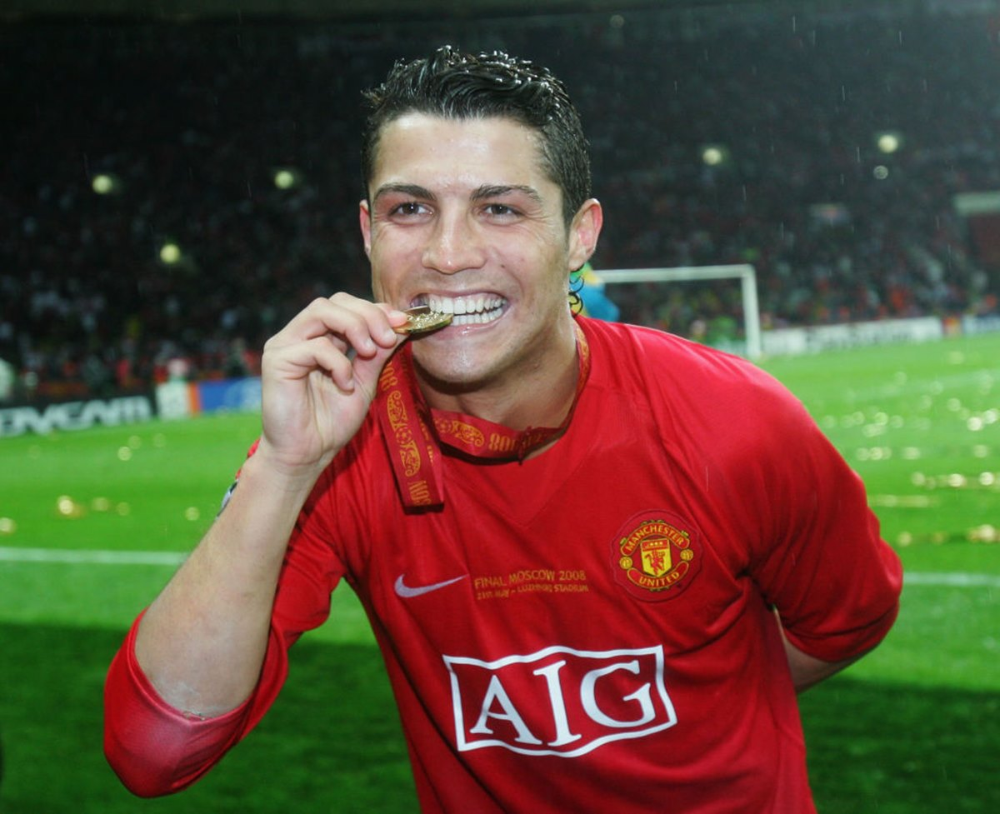
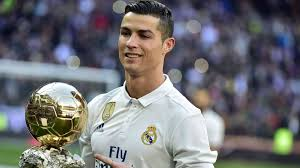
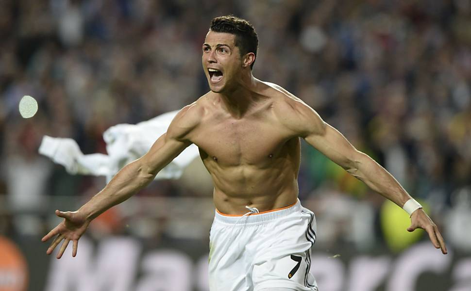
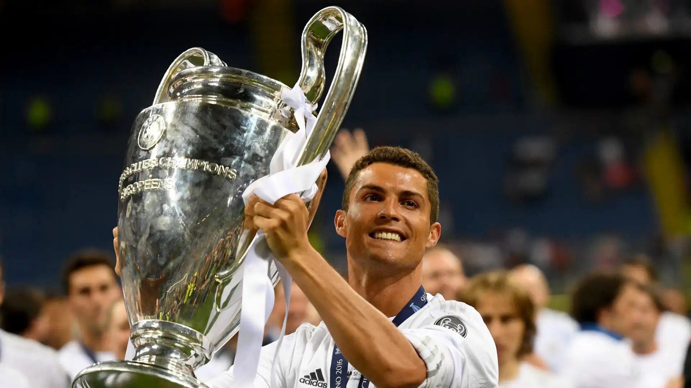
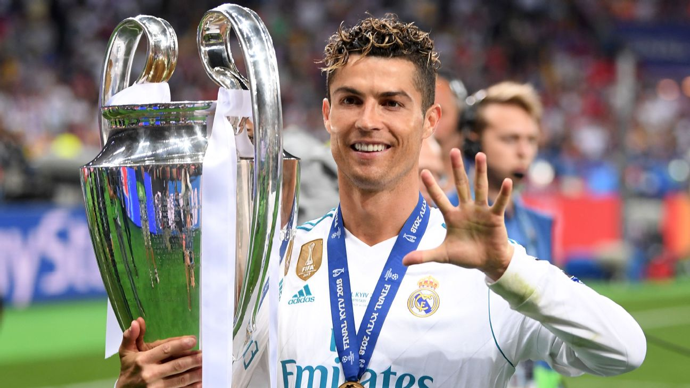

2008 (Manchester United)
Em 2008 crsitiano Ronaldo ganhou sua primeira bola de ouro pelo Manchester United,
nos dando uma amostrinha do AUGE que estaria por vir no futebol!

E conquistando tambem a sua primeira champios League
Fazendo uma incrivel temporada com :
49 Partidas
42 Gols
16 assistencias
2013 (Real Madrid)
em 2013 Cristiano Ronaldo conquistou sua segunda bola de ouro, pelo real madrid,
time qual ele entrou em 2009 demorando 5 anos para conquistar sua segunda bola de ouro

esse ano ele fez mais uma temporada fora da curva com :
55 partidas
56 gols
8 assistencias
2014 (Real Madrid)
Novamente cristiano ronaldo faz uma temporada incrivel, com direito a bola de outro e champions league para monstro

suas estaticas monstruosas foram:
47 jogos
51 gols
16 assistencias
2016 (Real Madrid)
A besta volt novamente a ganhar a bola de ouro, ja ficando no podio dentre os jogadores com mais bolas de ouro do mundo e impressionando a cada ano que passava

Essa temporada esse ser fora do normal fez :
48 jogos
51 gols
assistencias
2017 (Real Madrid)
A ultima vez que o Robozao ganhou bola de outro foi na monstruosa temporada de 2017

fechando o monstruoso Auge com :
45 jogos
43 gols
10 assistencias